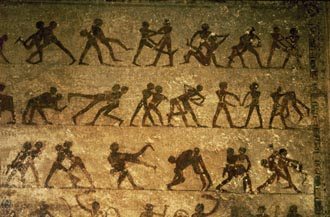
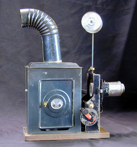
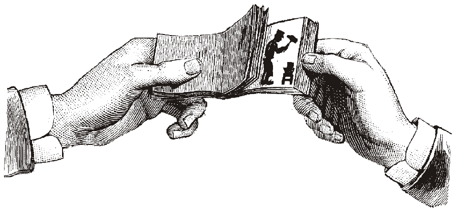

Animation Before Film
Overview
From the zoetrope
to hand-drawn films, animation has gone a long way from where it had once begun. Before the invention of film, evidence of the depiction of figures in motion existed as far back as the Paleolithic era. In more modern times, numerous devices which successfully displayed animated images were introduced well before the advent of the motion picture. The majority of these devices could only be viewed by a single person at a time, and for this reason they were considered novelties rather than being a foundation for a large-scale entertainment industry.[2] Changing technologies have made animated films on a larger scale more feasible in our current age; however, many of these devices utilized the basic principals of animation that are still in place today.
Early Approaches
As stated in the introduction, evidence of artistic interest in depicting figures in motion can be seen in as early as Paleolithic cave paintings. Animals in these paintings were often depicted with multiple sets of legs in superimposed positions. While it could have been simply a correction to the drawing (considering they had no means of erasing), it is very likely that these were very early attempts to convey motion.[3] More evidence of motion can be found in Egyptian murals, such as the one located at the Beni Hassan cemetery, which includes a sequence of images in temporal succession.[4]
It's important to note that, even though some of these early examples may appear similar to an animated series of drawings, the lack of equipment to show them in motion causes them to fall short of being true animation. However, the process of illustrating the passage of time by putting images in a chronological order has proved itself to be one of the most important steps in the development of animation, making such instances of this practice worth mentioning.
Devices and Inventions
Numerous devices which successfully displayed animated images were introduced well before the advent of the motion picture. These devices were used to entertain, amaze and sometimes even frighten people. The majority of these devices didn't project their images and accordingly could only be viewed by a single person at any one time. For this reason, they were considered toys rather than being a large scale entertainment industry like later animation. This caused them to be unable to gain much popularity during this time; however, many of these devices are still built by and for film students in the interest of teaching the basic principles of animation.
The Magic Lantern (c. 1650)
The earliest known predecessor of the modern day projector is the magic lantern.
Widely believed to have been originally developed by Christiann Huygens in the late 1650’s, it was able to project images onto an adjacent flat surface using light shone through hand-painted or translucent glass slides.[5] It was often used to project demonic, frightening images in order to convince people that they were witnessing the supernatural. Some slides for the lanterns contained moving parts, allowing a skilled projectionist to use slides with images of successive actions to make the image appear to move, making the magic lantern the earliest known example of projected animation.[6]
Thaumatrope (1824)
Much later after the magic lantern came the thaumatrope,
an optical toy found mainly during the Victorian Era.[7] The invention of the thaumatrope is credited to the astronomer Sir John Hershel; however, a well-known London physicist, Dr. John Ayrton Paris, was the one responsible for the popularity of this toy. A thaumatrope is a small disc held at the ends with string with an image drawn on each side. The images are drawn in such a way that, when the disc is spun, the two images appear to become superimposed.[8] While the thaumatrope did not produce animated scenes (as the two merging images became simply a continuous, yet static image), it demonstrated the idea of persistence of vision
(as theorized by Gestalt psychologists), where the human eye perceives images roughly 1/20 of a second after the object is gone. As the thaumatrope spins, the quickly flickering images seem to blend together, and the human eye perceives the action as a continuous movement.[9]
Phenakistoscope (1831)
After the success of the thaumatrope,
Belgian physicist Joseph Plateau introduced the phenakistoscope
in 1832. The phenakistoscope utilized the same persistence of motion principle as the thaumatrope while using a more complex design.[10] The phenakistoscope was comprised of two discs—one disc had slots around the edge, and the other contained drawings of progressive motion. When the two discs were spun together in the same direction and viewed in a mirror through the first disc’s slots, the pictures on the second disc appeared to move.[11]
Zoetrope (1834)
With the success of Plateau’s phenakistoscope, in 1834, William George Horner proposed an updated version of the device, which eliminated the need for a mirror and allowed more than one person to view it at the same time.[12] Horner’s new design was forgotten for nearly thirty years until 1867, when it became patented in England by M. Bradley, and in America by William F. Lincoln under the name of zoetrope.
Operating on the same principle as the phenakistoscope, the zoetrope was a cylindrical spinning device with several frames
of animation printed on the inside of the interior. When one views the spinning images on the opposite side of the cylinder through the slits on the side, they act as a sort of rudimentary shutter, giving the images the illusion of motion.[13]
Kineograph (Flip Book) (1834)
The kineograph
, more commonly known nowadays as the flip book,
was first patented in 1882 by Henry Van Hovenbergh. It was a book with particularly springy pages that had an animated sequence of frames printed near the unbound edge. By bending the pages back and then rapidly flipping through them one at a time, an illusion of motion could be obtained.[14]
The flip book was different from the already existing techniques because it could create the illusion of motion without anything serving as a flickering shutter as the slits had served in the previous devices. This is able to be accomplished as stated by Gestalt psychologists—they theorize that the eye can focus more easily on stationary objects than on moving ones. This idea seems to hold up with other animation techniques, even up to this point. Flip books were more often cited as inspiration by early animated film makers. While the book format still imposed a physical limit on the length of the animation, this limit was significantly longer than previous devices.[15]
Praxinoscope (1877)

The successor to the zoetrope, the praxinoscope
was the result of work carried out by Frenchman Emile Reynaud. An adaptation of Horner’s zoetrope, which, at the time, had become extremely popular, it used a similar cylindrical design that revolved. Images were viewed in a prism of mirrors which were located in the center of the drum. The result of this was animation without the loss of clarity of movement experienced in the zoetrope due to the slits moving across one’s field of view.[16]
In 1877, Reynaud took his idea and expanded it into theatrical entertainment. Most of the optical toys at the time were simply consisted of repetitive images. Realizing his invention could be expanded to include more expansive sets of pictures, Reynaud devised a method of painting images on glass paints where were jointed together in a single, flexible strip. By shining light through the pictures, light could be reflected by the mirror prisms in the center and focused onto a screen through a lens. The praxinoscope is considered to be the first instance of projected animation.[17]
In Brief
- Animation has gone a long way from where it once began.
- Beginning animations weren't
true
animations, but still depicted the passage of time of objects. - Numerous devices and inventions towards pursing the illusion of animation were being introduced starting in the 1650’s.
- The magic lantern projected images using light shone through translucent slides.
- The thaumatrope created an optical illusion with the rapid juxtaposition of two images.
- The phenakistoscope utilized a disc mechanism and a mirror to create the motion effect.
- The zoetrope improved upon the phenakistoscope by removing the once-needed mirror.
- The kineograph, or flip book, showed motion through the rapid alternation of drawings.
- The praxinoscope was an adaption of the zoetrope that could project rapidly changing images—it is considered to be the first instance of projected animation.